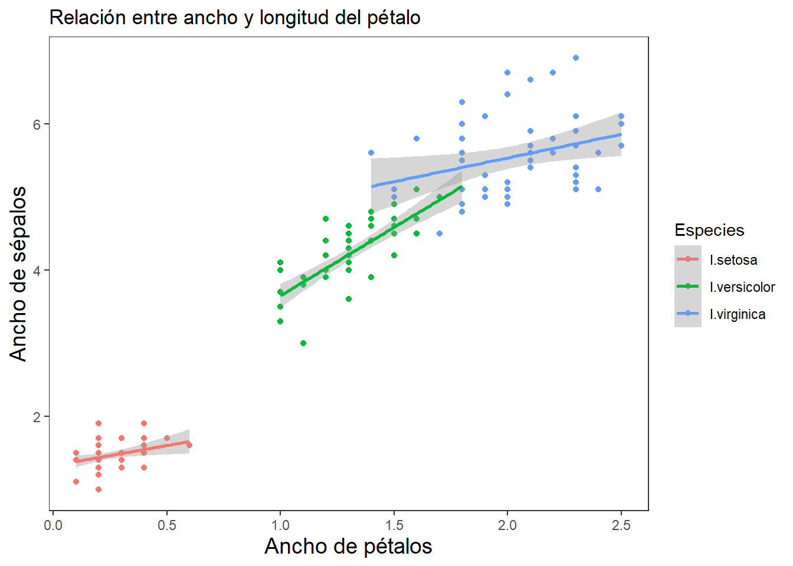
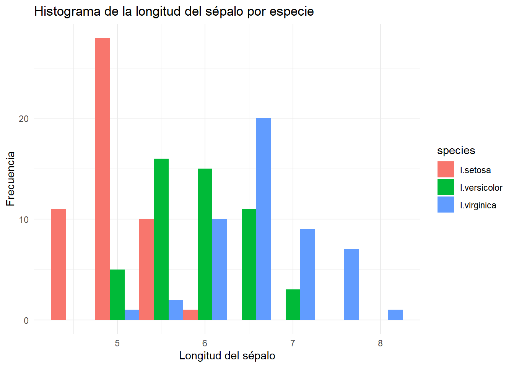
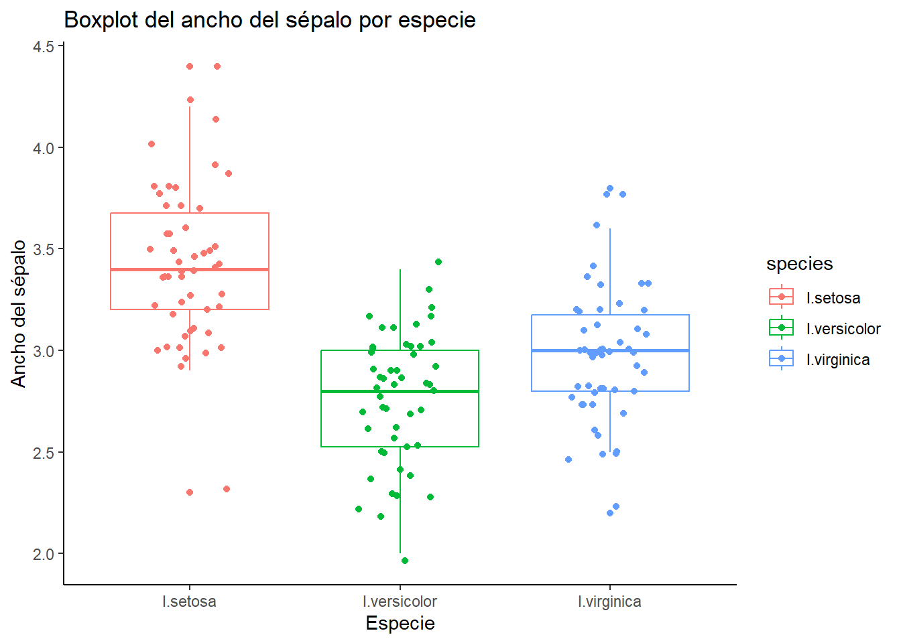

# Instalar y cargar Tidyverse
# install.packages("tidyverse") # Descomentar si no está instalado
library(tidyverse)Resumen
El presente taller tiene por objeto, brindar pautas generales para el manejo y visualización de datos biológicos en el lenguaje tidyverse de R. Se parte de un ejercicio inicial con la base de datos de lirios (iris), de distribución gratuita en R.
Taller 1. Introducción al Tidyverse
Cargar librerías o paquetes requeridos
Cargar las librerías requeridas. El Tidyverse es una colección de paquetes diseñados para trabajar con datos de manera eficiente y legible. Incluye herramientas como dplyr, ggplot2, tidyr, y más.
Carga y exploración de datos
glimpse es el comando de tidyverse que reemplaza a str en el lenguaje anterior de R.
# Base de datos de lirios
data(iris)
datos <- iris
# Explorar estructura
# glimpse(datos)
# summary(datos)Otra forma de cargar estas bases de datos. Se presentan unos cambios sutiles en los nombres de las variables, comparado a los comandos anteriores.
# Cargar un conjunto de datos ejemplo
url <- "https://raw.githubusercontent.com/mwaskom/seaborn-data/master/iris.csv"
datos <- read_csv(url)
# Explorar estructura
glimpse(datos)Rows: 150
Columns: 5
$ sepal_length <dbl> 5.1, 4.9, 4.7, 4.6, 5.0, 5.4, 4.6, 5.0, 4.4, 4.9, 5.4, 4.…
$ sepal_width <dbl> 3.5, 3.0, 3.2, 3.1, 3.6, 3.9, 3.4, 3.4, 2.9, 3.1, 3.7, 3.…
$ petal_length <dbl> 1.4, 1.4, 1.3, 1.5, 1.4, 1.7, 1.4, 1.5, 1.4, 1.5, 1.5, 1.…
$ petal_width <dbl> 0.2, 0.2, 0.2, 0.2, 0.2, 0.4, 0.3, 0.2, 0.2, 0.1, 0.2, 0.…
$ species <chr> "setosa", "setosa", "setosa", "setosa", "setosa", "setosa…summary(datos) sepal_length sepal_width petal_length petal_width
Min. :4.300 Min. :2.000 Min. :1.000 Min. :0.100
1st Qu.:5.100 1st Qu.:2.800 1st Qu.:1.600 1st Qu.:0.300
Median :5.800 Median :3.000 Median :4.350 Median :1.300
Mean :5.843 Mean :3.057 Mean :3.758 Mean :1.199
3rd Qu.:6.400 3rd Qu.:3.300 3rd Qu.:5.100 3rd Qu.:1.800
Max. :7.900 Max. :4.400 Max. :6.900 Max. :2.500
species
Length:150
Class :character
Mode :character
Selección y filtrado
select funciona para escoger filas o columnas en particular. filter sirve para escoger elementos en particular de las bases de datos.
# Seleccionar columnas
datos_select <-
datos %>%
select(sepal_length, species)# Filtrar filas
datos_filtrados <-
datos %>%
filter(species == "setosa")Creación de nuevas variables
mutate se usa para generar columnas adicionales, que pueden ser variables derivadas de la combinación de una o más variables iniciales.
# Crear una nueva columna
datos_area <-
datos %>%
mutate(sepal_area = sepal_length * sepal_width)Resumen estadístico de datos agrupados
group_by depende de contar con factores (variables con datos en bloques) para poder realizar resúmenes, como promedios (mean), desviaciones estándar, entre otros. El argumento na.rm = TRUE indica que se deben ignorar los valores faltantes (NA) al calcular los estadísticos de sepal_length para cada especie de lirio.
# Resumen estadístico "datos_resumidos"
datos_resumidos <-
datos %>% # Base de datos resumida
group_by(species) %>% # Factor o variable agrupadora
summarise(datos.m = mean(sepal_length, na.rm = TRUE), # Media de cada grupo del factor
datos.de = sd(sepal_length, na.rm = TRUE), # Desviacioes estándar de cada grupo
datos.var = var(sepal_length, na.rm = TRUE), # Varianzas de cada grupo
n.Ab = n(), # Tamaño de cada grupo
datos.ee = sd(sepal_length, na.rm = TRUE)/
sqrt(n())) # Error estándar de cada grupoTransformación de datos
pivot_longer emula a las tablas dinámicas de Excel, en el sentido de ajustar las bases de datos en formatos alargados o a lo ancho. Para el siguiente ejemplo, se filtran los datos de los sépalos con sus valores en frente, nombrando a las variables de sépalos como “measurement” y a sus valores como “value”.
# De formato ancho a largo
formato_largo <-
datos %>%
pivot_longer(cols = starts_with("sepal"),
names_to = "measurement",
values_to = "value")pivot_wider, permite convertir el formato alargado a uno similar a la base de datos original (datos)
# De formato largo a ancho
formato_ancho <-
formato_largo %>%
pivot_wider(names_from = measurement,
values_from = value,
values_fn = first)Unión de datos
tibble, similar a datos.frame, permite fusionar elementos en las bases de datos. Para el siguiente ejemplo se crean dos vectores (species y region) y se unen los tres elementos de cada uno, para generar una base de datos de 3 x 3 elementos.
# Unir bases de datos
datos_unidos <-
tibble(
species = c("setosa", "versicolor", "virginica"),
region = c("A", "B", "C")
)datos_combinados, permite unir a los elementos de la base anterior con los de la base original de lirios, con el objetivo de insertar la columna “region”.
#
datos_combinados <-
datos %>%
left_join(datos_unidos, by = "species")Visualización básica
ggplot2 es el pricipal paquete gráfico de tidyverse y de manera similar a los comandos anteriores, se construye por capas, separadas con “+”.
library(forcats) # Para manipulación de factores
# Cambiar etiquetas de Layers con recode_factor()
datos <-
datos %>%
mutate(species = recode_factor(species,
"setosa" = "I.setosa",
"versicolor" = "I.versicolor",
"virginica" = "I.virginica"))
# Crear un gráfico de caja
library(ggplot2)
ggplot(datos, aes(x = species, y = sepal_length)) +
geom_boxplot(aes(fill = species)) +
labs(title = "Distribución de la longitud del sépalo por especie",
x = "Especies", y = "Longitud de sépalos", fill="Especies") +
scale_fill_manual(values = c('#fc8d59','#ffffbf','#99d594')) +
theme_bw()+
theme(
panel.grid.major = element_blank(),
panel.grid.minor = element_blank(),
axis.title = element_text(size = 14))# se puede reemplazar scale por: scale_color_viridis(discrete = TRUE)Cuestionario en clase
1. Resumen estadístico
Pregunta: ¿Cuántas especies diferentes hay en el conjunto de datos y cuántas observaciones hay para cada una?
# librerías
library(tidyverse)
library(kableExtra)
# Muestra las tres especies y los tamaños de muestra
datos_resum1 <-
datos %>%
group_by(species) %>%
summarize(count = n())
# tabla con los datos
head(datos_resum1) %>%
kbl() %>%
kable_classic(full_width = F)| species | count |
|---|---|
| I.setosa | 50 |
| I.versicolor | 50 |
| I.virginica | 50 |
# datos_resum1 %>%
# kbl(caption = "", booktabs = F,longtable = T) %>%
# kable_classic(full_width = F, html_font = "Cambria")
# invisible()Pregunta: Calcula los valores máximos, mínimos, la mediana, el rango y el coeficiente de variación de sepal_length.
# Resumen estadístico "datos_resum"
datos_resumidos1 <-
datos %>% # Base de datos resumida
group_by(species) %>% # Factor o variable agrupadora
summarise(datos.me = median(sepal_length, na.rm = TRUE), # Mediana de cada grupo del factor
datos.ran = max(sepal_length, na.rm = TRUE) -
min(sepal_length, na.rm = TRUE), # Rango de cada grupo
datos.coef = sd(sepal_length, na.rm = TRUE)/
mean(sepal_length, na.rm = TRUE), # Coeficiente de variación
)
# tabla con los datos
head(datos_resumidos1) %>%
kbl() %>%
kable_classic(full_width = F)| species | datos.me | datos.ran | datos.coef |
|---|---|---|---|
| I.setosa | 5.0 | 1.5 | 0.0704134 |
| I.versicolor | 5.9 | 2.1 | 0.0869561 |
| I.virginica | 6.5 | 3.0 | 0.0965209 |
Pregunta: Calcula la correlación entre sepal_length y petal_length para cada especie.
# Correlación entre sepal_length y petal_length por especie
datos_resumidos2 <-
datos %>%
group_by(species) %>%
summarise(correlación = cor(sepal_length,
petal_length,
use = "complete.obs"))%>%
rename(Especies = species) # 'species' a 'Especies'
# tabla con los datos
head(datos_resumidos2) %>%
kbl() %>%
kable_classic(full_width = F)| Especies | correlación |
|---|---|
| I.setosa | 0.2671758 |
| I.versicolor | 0.7540490 |
| I.virginica | 0.8642247 |
Pregunta: Calcula el coeficiente de asimetría (skewness) de sepal_width para cada especie.
library(e1071) # Librería Para calcular skewness
# Coeficiente de asimetría de sepal_width por especie
datos_resumidos3 <-
datos %>%
group_by(species) %>%
summarize(Asimetría = skewness(sepal_width)) %>%
rename(Especies = species) # 'species' a 'Especies'
# tabla con los datos
head(datos_resumidos3) %>%
kbl() %>%
kable_classic(full_width = F)| Especies | Asimetría |
|---|---|
| I.setosa | 0.0387295 |
| I.versicolor | -0.3413644 |
| I.virginica | 0.3442849 |
2. Filtrado condicional
Pregunta: Encuentra todas las observaciones donde el ancho del sépalo (sepal_width) es mayor a 3.5.
# Filtrar observaciones con ancho de sépalo > 3.5
sepalos_anchos <-
datos %>%
filter(sepal_width > 3.5)
# tabla con los datos
head(sepalos_anchos) %>%
kbl() %>%
kable_classic(full_width = F)| sepal_length | sepal_width | petal_length | petal_width | species |
|---|---|---|---|---|
| 5.0 | 3.6 | 1.4 | 0.2 | I.setosa |
| 5.4 | 3.9 | 1.7 | 0.4 | I.setosa |
| 5.4 | 3.7 | 1.5 | 0.2 | I.setosa |
| 5.8 | 4.0 | 1.2 | 0.2 | I.setosa |
| 5.7 | 4.4 | 1.5 | 0.4 | I.setosa |
| 5.4 | 3.9 | 1.3 | 0.4 | I.setosa |
Pregunta: Filtra las observaciones donde petal_length es mayor a 4 y selecciona solo las columnas species y petal_length.
# Filtrar observaciones con largo de pétalo > 4 y escoger columnas species y petal_length
datos_filtrados <-
datos %>%
filter(petal_length > 4) %>%
select(species, petal_length) %>%
rename(Especies = species, L.pétalos = petal_length)
# tabla con los datos
head(datos_filtrados) %>%
kbl() %>%
kable_classic(full_width = F)| Especies | L.pétalos |
|---|---|
| I.versicolor | 4.7 |
| I.versicolor | 4.5 |
| I.versicolor | 4.9 |
| I.versicolor | 4.6 |
| I.versicolor | 4.5 |
| I.versicolor | 4.7 |
Pregunta: Encuentra todas las observaciones donde sepal_length es mayor que el promedio de sepal_length para su especie.
# Filtrar observaciones con sepal_length mayor que el promedio de su especie
datos_prom <-
datos %>%
group_by(species) %>%
mutate(prom_s_length = mean(sepal_length)) %>%
filter(sepal_length > prom_s_length)
# tabla con los datos
head(datos_prom) %>%
kbl() %>%
kable_classic(full_width = F)| sepal_length | sepal_width | petal_length | petal_width | species | prom_s_length |
|---|---|---|---|---|---|
| 5.1 | 3.5 | 1.4 | 0.2 | I.setosa | 5.006 |
| 5.4 | 3.9 | 1.7 | 0.4 | I.setosa | 5.006 |
| 5.4 | 3.7 | 1.5 | 0.2 | I.setosa | 5.006 |
| 5.8 | 4.0 | 1.2 | 0.2 | I.setosa | 5.006 |
| 5.7 | 4.4 | 1.5 | 0.4 | I.setosa | 5.006 |
| 5.4 | 3.9 | 1.3 | 0.4 | I.setosa | 5.006 |
3. Creación de variables
Pregunta: Calcula una nueva columna que sea la relación entre longitud y ancho del pétalo (petal_length / petal_width).
# Crear nueva columna para relación de pétalos
datos_rel <-
datos %>%
mutate(petal_rel = petal_length / petal_width)
# tabla con los datos
head(datos_rel) %>%
kbl() %>%
kable_classic(full_width = F)| sepal_length | sepal_width | petal_length | petal_width | species | petal_rel |
|---|---|---|---|---|---|
| 5.1 | 3.5 | 1.4 | 0.2 | I.setosa | 7.00 |
| 4.9 | 3.0 | 1.4 | 0.2 | I.setosa | 7.00 |
| 4.7 | 3.2 | 1.3 | 0.2 | I.setosa | 6.50 |
| 4.6 | 3.1 | 1.5 | 0.2 | I.setosa | 7.50 |
| 5.0 | 3.6 | 1.4 | 0.2 | I.setosa | 7.00 |
| 5.4 | 3.9 | 1.7 | 0.4 | I.setosa | 4.25 |
4. Transformación de datos
Actividad: Convierte el formato de los datos para que todas las mediciones de sepalos (longitudes y anchos) queden en una sola columna.
# Transformar datos de ancho a largo
formato_largo <- datos %>%
pivot_longer(cols = starts_with("sepal"),
names_to = "measurement",
values_to = "value")
# tabla con los datos
head(formato_largo) %>%
kbl() %>%
kable_classic(full_width = F)| petal_length | petal_width | species | measurement | value |
|---|---|---|---|---|
| 1.4 | 0.2 | I.setosa | sepal_length | 5.1 |
| 1.4 | 0.2 | I.setosa | sepal_width | 3.5 |
| 1.4 | 0.2 | I.setosa | sepal_length | 4.9 |
| 1.4 | 0.2 | I.setosa | sepal_width | 3.0 |
| 1.3 | 0.2 | I.setosa | sepal_length | 4.7 |
| 1.3 | 0.2 | I.setosa | sepal_width | 3.2 |
Pregunta: Crea una nueva columna que indique si la longitud del pétalo (petal_length) es mayor que la mediana de petal_length.
# Nueva columna indicando si petal_length es mayor que la mediana
mediana_petal_length <- median(datos$petal_length, na.rm = TRUE)
datos_mediana <-
datos %>%
mutate(med_petal_length = petal_length > mediana_petal_length)
# tabla con los datos
head(datos_mediana) %>%
kbl() %>%
kable_classic(full_width = F)| sepal_length | sepal_width | petal_length | petal_width | species | med_petal_length |
|---|---|---|---|---|---|
| 5.1 | 3.5 | 1.4 | 0.2 | I.setosa | FALSE |
| 4.9 | 3.0 | 1.4 | 0.2 | I.setosa | FALSE |
| 4.7 | 3.2 | 1.3 | 0.2 | I.setosa | FALSE |
| 4.6 | 3.1 | 1.5 | 0.2 | I.setosa | FALSE |
| 5.0 | 3.6 | 1.4 | 0.2 | I.setosa | FALSE |
| 5.4 | 3.9 | 1.7 | 0.4 | I.setosa | FALSE |
5. Visualización
Pregunta: Crea un gráfico de dispersión donde el eje X sea el ancho del pétalo (petal_width) y el eje Y la longitud del pétalo (petal_length), diferenciando por especie.
library(forcats) # Para manipulación de factores
# Cambiar etiquetas de Layers con recode_factor()
datos <-
datos %>%
mutate(species = recode_factor(species,
"setosa" = "I.setosa",
"versicolor" = "I.versicolor",
"virginica" = "I.virginica"))
# Figura
ggplot(datos, aes(x = petal_width, y = petal_length, color = species)) +
geom_point() +
geom_smooth(method= "lm") +
labs(title = "Relación entre ancho y longitud del pétalo",
x = "Ancho de pétalos", y = "Ancho de sépalos",
color= "Especies") +
theme_bw() +
theme(
panel.grid.major = element_blank(),
panel.grid.minor = element_blank(),
axis.title = element_text(size = 14)) # Aumenta el tamaño del texto de los ejes
# Aplicar la transformación logarítmica: scale_y_continuous(trans = "log10") Pregunta: Crea un histograma de la longitud del sépalo (sepal_length) para cada especie.
# Histograma de sepal_length por especie
ggplot(datos, aes(x = sepal_length, fill = species)) +
geom_histogram(binwidth = 0.5, position = "dodge") +
labs(title = "Histograma de la longitud del sépalo por especie",
x = "Longitud del sépalo", y = "Frecuencia") +
theme_minimal()
Pregunta: Crea un boxplot de sepal_width para cada especie y añade puntos de datos individuales.
# Boxplot de sepal_width por especie con puntos individuales
ggplot(datos, aes(x = species, y = sepal_width, color = species)) +
geom_boxplot() +
geom_jitter(width = 0.2) +
labs(title = "Boxplot del ancho del sépalo por especie",
x = "Especie", y = "Ancho del sépalo") +
theme_classic()
Pregunta: Transforma los datos para que todas las mediciones de pétalos (longitudes y anchos) queden en una sola columna y crea un gráfico de barras apiladas.
# Transformar datos de ancho a largo y crear gráfico de barras apiladas
formato_largo_petalos <- datos %>%
pivot_longer(cols = starts_with("petal"),
names_to = "measurement",
values_to = "value")
ggplot(formato_largo_petalos, aes(x = species, y = value, fill = measurement)) +
geom_bar(stat = "identity", position = "stack") +
labs(title = "Mediciones de pétalos por especie",
x = "Especie", y = "Valor") +
theme_minimal()